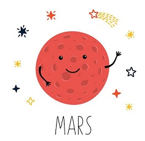
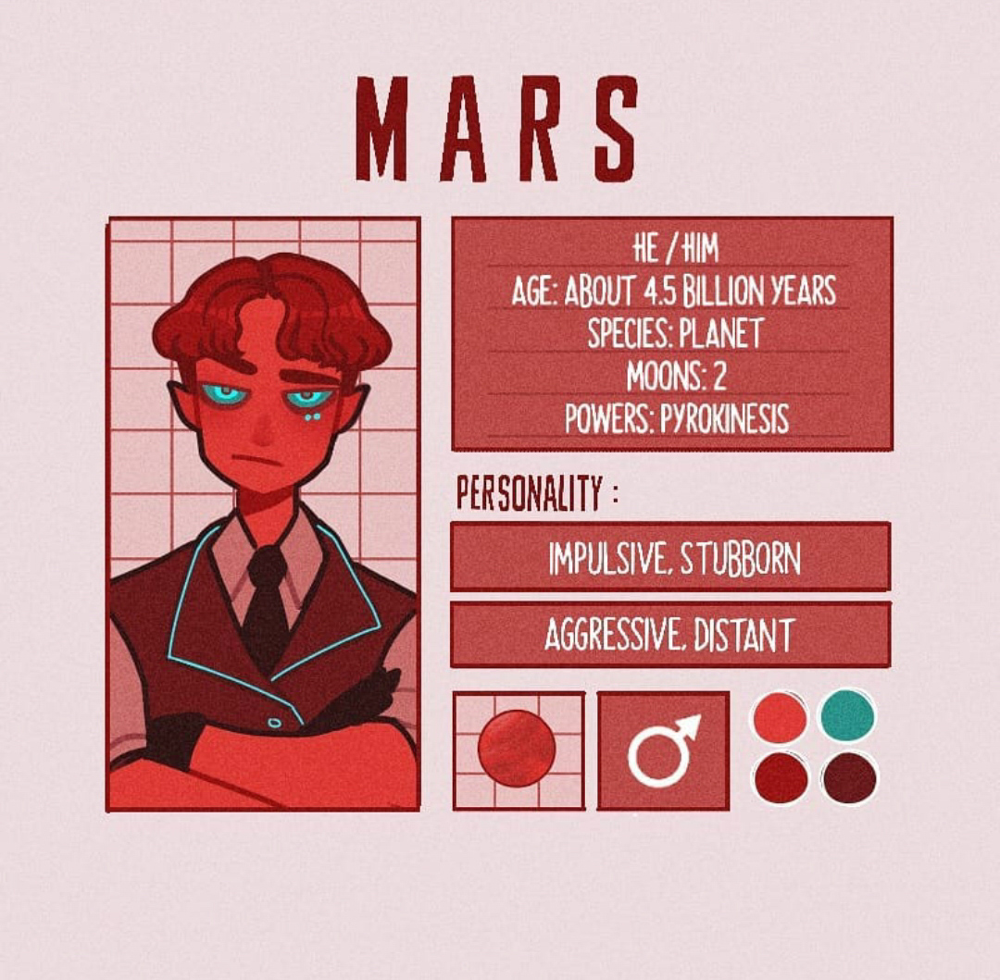

Ну привет!
Я Марс, Красная планета, четвёртая от солнца планета Солнечной системы и предпоследняя по размеру среди планет. Я - планета земной группы, у меня есть атмосфера, хотя и очень разреженная, а также вулканы, горы, пустыни и полярные ледниковые шапки, как у Земли.
Я не только выгляжу красным на Земном небе, моя поверхность действительно имеет красноватый оттенок. Это происходит из-за того, что в почве имеется большое количество окислов железа, известных как ржавчина. В целом моя почва близка по составу земной.
Я почти вдвое меньше Земли по диаметру, который составляет 6779 км, и лишь немногим больше Меркурия. Площадь моей поверхности равна площади суши на Земле, а моя масса составляет лишь десятую часть массы Земли.
Я нахожусь примерно в полтора раза дальше от Солнца, чем Земля.
Я назван в честь древнеримского бога войны Марса, которого в Греции называли Аресом. Мой красноватый цвет во многих культурах ассоциировался с кровью и огнем. Название моих спутников тоже ассоциируется с войной: Фобос и Деймос означают "страх" и "ужас".
Моя атмосфера состоит в основном из углекислого газа и очень разреженна. Давление на моей поверхности в 160 раз меньше, чем давление на поверхности Земли. Температура здесь колеблется от -153° на полюсе зимой до +20° на экваторе. Средняя температура составляет -50°.
Как и у Земли, моя ось вращения наклонена к орбите, поэтому здесь есть смена времён года. Кстати, год на мне длится 687 земных дней, а сутки почти равны земным и составляют 24 часа 39 минут.
Марс
- Пол: Мужской
- Возраст: 4.5 биллионов лет
- Спутник: Есть
- Способности: Пирокинез(манипуляция огонём силой мысли)
- Качества: Импульсивный, агрессивный, упрямый, отдалённый
- Любимые цвета: Тёплые оттенки
